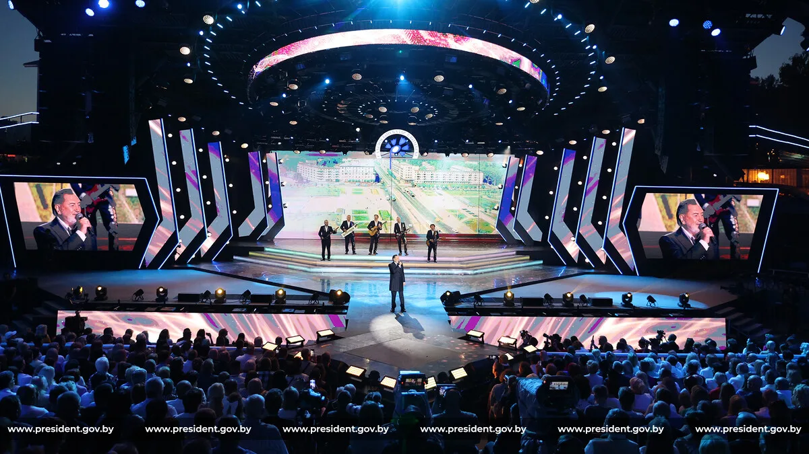

МЕЖДУНАРОДНЫЙ ФЕСТИВАЛЬ ИСКУССТВ
Славянский
базарв Витебске
Целый город. Тысячи голосов. Один язык — искусство. Откройте историю фестиваля, который объединяет людей и превращает лето в незабываемую встречу.
Открыть фестиваль- 1992
- год первого фестиваля
- Витебск
- город, который объединяет
- Искусство
- наш общий язык

к миру и взаимопониманию
МНОГО ГОЛОСОВ. ОДНА ИСТОРИЯ.
Пять граней фестиваля
Выберите свой маршрут
в мир Славянского базара.
ОТ ПЕРВОГО АККОРДА
История,
которая звучит.
Меняются сцены и имена. Остаётся главное — желание услышать друг друга.
Официальный сайт фестиваля ↗1992Начало большой истории
Летом 1992 года в Витебске прошёл первый «Славянский базар». Международный музыкальный фестиваль стал пространством встречи разных культур.
1995Больше, чем музыка
«Славянский базар» получил название Международного фестиваля искусств. Его культурная палитра объединила музыку, театр, кино и выставочные проекты.
2003Время юных талантов
Впервые состоялся Международный детский музыкальный конкурс «Витебск» — ещё одна возможность для молодых исполнителей выйти на большую сцену.
СегодняГород становится сценой
Концерты в Летнем амфитеатре, театральные встречи, выставки и уличное искусство создают многоголосую атмосферу фестивального Витебска.
НЕ ПРОСТО ФОТОГРАФИИ — МОМЕНТЫ
Увидеть. Почувствовать. Запомнить.
Нажмите на фотографию, чтобы рассмотреть её ближе
У ФЕСТИВАЛЯ ЕСТЬ СВОЙ ГОЛОС
Включите настроение.
Гимн «Славянского базара» — музыкальное приглашение в атмосферу фестиваля.
О записи и текстовая альтернатива
Вокальная запись гимна фестиваля. Смысловое описание без дословной расшифровки: песня о встрече людей и объединяющей силе искусства.
ПРОДОЛЖИМ ЗНАКОМСТВО?
У каждой встречи
есть начало.
Хотите узнать больше об истории фестиваля или поделиться воспоминанием? Оставьте свой вопрос.
Актуальную программу и билеты публикует официальный сайт.